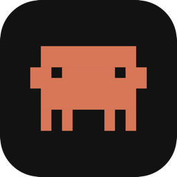

✻
Tue 9:41 AM
✻
Clawd
✓
☁
Codex
✓
▮
Cursor
✓

Mascot
Keeps your Mac awake. Adorably.
$
brew install --cask maulmota/tap/mascot
Free & open source · macOS 12+ · github.com/maulmota/mascot-screensaver